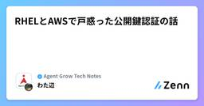
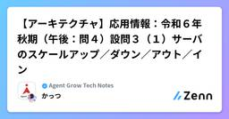
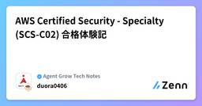

Agent Grow Tech Notesのフィード
https://zenn.dev/p/agent_grow
Agent Grow エンジニアによるテックブログです！
フィード

RHELとAWSで戸惑った公開鍵認証の話
Agent Grow Tech Notesのフィード
● はじめに最近、AWSソリューションアーキテクトの資格を取ろうと思い、実機を触りながら勉強を実施しています。普段、SSHの公開鍵認証について、普段は何気なく使っていたのですが、AWS EC2で初めてキーペアを扱ったときに「あれ？」と違和感を覚えました。RHEL系Linuxサーバの設計や構築に慣れているつもりだったSSHの鍵認証。でもAWSでの流れはちょっと違う…。今回は、RHELとAWSでのキーペアの扱いの違いに戸惑った体験を整理してみたいと思います。（大まかな流れの紹介なので、コマンドのオプションや、AWSの設定等はここでは紹介を省いています。） ● RHEL...
2日前

【アーキテクチャ】応用情報：令和６年秋期（午後：問４）設問３（１）サーバのスケールアップ／ダウン／アウト／イン
Agent Grow Tech Notesのフィード
突然ですが応用情報技術者試験について色々と記事を書いていますが、システムアーキテクチャを取り上げるのは今回が初めてです。ただ、ご紹介する内容は午前対策や、もしかしたらクラウド系のベンダ資格にも繋がるものではないかと思いました。問われると、意外と「あれ？」ってなることもあるかもしれません。 今回のサンプルこちらの過去問を使い、解説をします。※出典：令和６年度 秋期 応用情報技術者試験 午後 問題冊子 問４：システムアーキテクチャ 設問３（１）動画配信サービスを運用するにあたり、サーバの性能アップ・拡張が必要というシチュエーションです。もう既に答えてしまっているの...
4日前

AWS Certified Security - Specialty(SCS-C02) 合格体験記
Agent Grow Tech Notesのフィード
はじめに2025年6月にAWS Certified Security - Specialty(SCS-C02)に合格しました。SCS-C02に挑戦しようと思った背景ですが、AWS Certified Solutions Architect – Professional(SAP-C02)AWS Certified DevOps Engineer - Professional (DOP-C02)直近で上記2点のAWS資格が取得できたので、次は専門資格を頑張ろう！と一念発起し、最初に取り組んだのがSCS-C02ですSCS-C02を選んだ理由は、担当業務で特に役に立ちそう、...
5日前

【Macユーザー向け】Windowsのエクスプローラーに絶望した？Finderの快適さを取り戻せ！
Agent Grow Tech Notesのフィード
はじめにMacユーザーがWindowsで仕事を始めて、とても不便に感じたこと。それは...「エクスプローラーの数が多くなって目的のフォルダのエクスプローラーを開いていても探すのが大変！！」ということ。下記画像のようになっている人も少なくないのではないでしょうか？MacのFinderはタブの機能がついているため、１つのFinderで複数のフォルダを管理できます。もちろんFinderを複数にすることも可能です。※筆者はWindows10のPCを使用しています。Windows11ではタブ機能があるみたいです。このような悩みを抱えてる人は多々いるのではないでしょうか？今回...
11日前
【セキュリティ】デジタルフォレンジックス：変だけど『忘れにくい』覚え方？！
Agent Grow Tech Notesのフィード
今回は「デジタルフォレンジックス」をテーマに、証拠保全や調査分析という本質を押さえつつ、ちょっと変わっているけど忘れにくい覚え方をご紹介します。 情報処理技術者試験における出題状況令和7年度春期の応用情報技術者試験の午後問題で「電磁的記録の証拠保全調査及び分析」というテーマに関する問題が出題されました。問題文には「カタカナ12文字以内で調査方法の名称を答えよ」という指示があり、ここでの答えは「デジタルフォレンジックス」だと予想されます。※出典：令和７年度 春期 応用情報技術者試験 午後 問題冊子IPAの正式な模範解答が公表されるのはまだ先の話ですが、専門学校や出版社などから...
12日前
【セキュリティ】基本情報：令和６年度（科目B：問６）テレワークのためのネットワーク設定変更
Agent Grow Tech Notesのフィード
基本情報技術者試験今回も前回に引き続き、科目Bの情報セキュリティの問題について解説します。 テーマについて表題の通りテレワークが関係します。コロナも落ち着いて、出社するように変わった（戻った？）企業も多いと思いますので、もしかしたら出題されにくいのかもしれません。しかし、外からのアクセスはテレワークだけではありませんよね？客先訪問や出張で利用することもあるはずです。また、個人所有機器を業務で利用するBYODも、機器の認証が必要という観点ではテレワークの有無に左右されないのかなと思います。そういう意味でも、やはり油断せずに問題に慣れておくべきですね。 今回のサンプ...
19日前
Microsoft Azureの勉強記録 〜Azure全体像編〜
Agent Grow Tech Notesのフィード
勉強しようと思ったきっかけ客先にて、Azure App Serviceを利用してWebアプリケーションを運用していく方向に変更になり、他のメンバーがAzure App Serviceについて調べて構築していたが、客先を離脱することになり、AWSでのインフラ構築経験のある自分が引き継いで対応することになったので、勉強スタートしました。実際に「こうした・ああした」といった具体的な取り組みについて書けるのは、もう少し後になりそうなので、まずはAzure App Serviceに実際に触る前の前提知識としてまとめてみます。私はAWSの経験はほどほどにあるので、AWSとの違いも含めて整理...
24日前
【セキュリティ】基本情報：令和５年度（科目B：問６）『初期設定』は狙われる！
Agent Grow Tech Notesのフィード
基本情報技術者試験今回は、科目Bの情報セキュリティの問題について解説します。 侮ってはいけない科目Bは２０問が出題されますが、データ構造及びアルゴリズムが１６問で残り４問が情報セキュリティです。であれば、情報セキュリティは捨てても良いのか？そんなことはありません。プログラムを読ませる問題の中には、時間がかかったり難しいものも紛れているため、セキュリティで少しでもカバーするのは有効な戦略です。「あと１問だったのに！！」と、後悔しないためにも押さえておきましょう。 今回のサンプルこちらの公開問題を使い、解説をします。※出典：基本情報技術者試験（FE）公開問題（令和...
1ヶ月前
【SG試験】令和5年度（科目B：問１５）標的型メール攻撃
Agent Grow Tech Notesのフィード
標的型メール攻撃今回はEmotet（エモテット）を思わせるような、というよりだからこそ出題されたのだろうという内容です。厄介なのは、メールのやりとりをしている得意先などに巧妙になりすまして攻撃する点です。エモテットについての情報はこちらを参照してみて下さい。IPA：Emotet（エモテット）関連情報 今回のサンプルこちらの公開問題を使い、解説をします。※出典：情報セキュリティマネジメント試験（SG）公開問題（令和5年度 科目B） 科目Bこの問題を使います。 長い！長いです。テーマがほぼエモテットなので、注意喚起の意味でも仕方ないと思います。 解き...
1ヶ月前
Windows Serverって何なんだろう？？
Agent Grow Tech Notesのフィード
はじめにサーバってなんかかっこいい響きですが、具体的に何をしているのかよく知らないんですよね・・・初心者なりにWindows Serverが何かを調べてみます！！🧐（有識者の方は優しく見守っていただけるとありがたいです笑） そもそもサーバとは現代では複数のコンピュータがネットワークを介してデータや処理を分散させる構成が主流になっています。この分散処理はクライアントとサーバと呼ばれるもので構成されており、サービス（処理）を要求する側がクライアント、提供する側がサーバとなります。ここで"サーバ"という単語が出てくるんですね！サーバ ：サービスを提供する側クライア...
1ヶ月前
【SG試験】令和5年度（科目B：問１４）データ保管リスク対策
Agent Grow Tech Notesのフィード
データ保管リスク業務で扱うデータは、バックアップを保管していればトラブルが発生した際に復旧できるので安心です。しかし、バックアップそのものに問題が発生しないとは言い切れません。今回は、そのような事態を防ぐには？ということを考える問題です。 今回のサンプルこちらの公開問題を使い、解説をします。※出典：情報セキュリティマネジメント試験（SG）公開問題（令和5年度 科目B） 科目Bこの問題を使います。 この問題は問題文をほぼ読まずに解けてしまいます。ただし、それはテクニックですので学習の意味では全体像を把握した上で解いてみて下さい。 解き方まず、設問で...
1ヶ月前
【SG試験】令和5年度（科目B：問１３）情報セキュリティリスクアセスメント
Agent Grow Tech Notesのフィード
リスクアセスメント情報セキュリティにおけるリスクアセスメントは、しきい値を設定しリスク対応の要否を判定します。もちろん、本当はあらゆる対応を全て出来れば良いのですが、経営の観点ではコストをどのくらいかけるか？などを考慮する必要があるためです。 今回のサンプルこちらの公開問題を使い、解説をします。※出典：情報セキュリティマネジメント試験（SG）公開問題（令和5年度 科目B） 科目Bこの問題を使います。 この問題、実は「わけのわからない表がある・・・」「解答の選択肢、ア～コ？多すぎる！」そう思う方もおられると思います。しかし！この問題、実はビックリするく...
2ヶ月前
【SG試験】令和6年度（科目B：問１４）バックアップポリシーを遵守し、適切なリカバリを考える
Agent Grow Tech Notesのフィード
バックアップポリシー前回までとは異なり、あまり身近に感じない方も多いテーマかもしれません。インフラやDB関連で、災害対策などに馴染みのある方には、すぐ理解できる内容です。科目Aの勉強で得た知識（または基本情報や応用情報のセキュリティなど）を使って、素早く状況を把握することにより選択肢の絞り込みが容易になる問題です。 今回のサンプルこちらの公開問題を使い、解説をします。※出典：情報セキュリティマネジメント試験（SG）公開問題（令和6年度 科目B） 科目Bこの問題を使います。 用語のオンパレードエンジニアであれば、もしくはIPAの他の試験を受験されるのであれば...
2ヶ月前
【SG試験】令和6年度（科目B：問１３）不正アクセス対策、何を防ぎたいのか？
Agent Grow Tech Notesのフィード
不正アクセス対策と、一言で片付けて良いのでしょうか？攻撃手法は様々で、時代の進歩によって増えたりもしています。つまり、同じ『不正アクセス対策』でも目的により機能を合わせて選択することが求められます。（あらゆる対策を全部いっぺんにできれば良いのかもしれませんが）今回は、そのようなことを問う問題です。 今回のサンプルこちらの公開問題を使い、解説をします。※出典：情報セキュリティマネジメント試験（SG）公開問題（令和6年度 科目B） 科目Bこの問題を使います。 びびらずに「うわ～、読みたくない！」と思うかもしれませんが、落ち着いて読めば意外と普段の業務でみ...
2ヶ月前
【SG試験】令和6年度（科目B：問１５）偽サイトには、とにかく『従わない』ように
Agent Grow Tech Notesのフィード
情報セキュリティマネジメント試験今回は、IPAの『SG試験』こと『情報セキュリティマネジメント試験』の解説記事です。エンジニア向けの試験ではないかもしれませんが、登録セキスぺやインフラ系のベンダ資格の受験を考えている方は、入門や復習などの意味で受験してみると良いかもしれません。 今回のサンプルこちらの公開問題を使い、解説をします。※出典：情報セキュリティマネジメント試験（SG）公開問題（令和6年度 科目B） 科目Bこの問題を使います。科目Aは短文なので、それと比べると「うわ～、長い！」と思う方もおられると思います。それでも応用情報や登録セキスぺよりは全然短い...
2ヶ月前
Javaエンジニアの皆様、Kotlinいかがですか？（１）
Agent Grow Tech Notesのフィード
はじめに突然ですが、Kotlin（ことりん）というプログラミング言語をご存じでしょうか。私はここ約1年半、サーバサイドエンジニアとしてKotlinを使って開発をしてきました。それまではJavaでの開発がメインで、Kotlin何それ？という状態でプロジェクトに参画しましたが、今では「Javaにはもう戻れないな・・・」と思えるほど、Kotlinの良さを実感しています。要約すると 「めっちゃ簡潔！」「本質的なことに集中できる！」 に尽きます。ここから3記事で、そう言わせる理由を語っていこうと思います。1. （本記事）Null安全である2. 検査例外チェックからの解放3. ...
2ヶ月前
【ストラテジ】応用情報：令和６年秋期（午前：問７３）製造業／正味所要量
Agent Grow Tech Notesのフィード
今回もストラテジ系だが前回は経営と損益に関する内容でしたが、今回は製造現場における必要な所要量です。つまり、本当に計算がメインとなる問題と言えます。 今回のサンプル今回もこちらの過去問を使い、解説をします。※出典：令和６年度 秋期 応用情報技術者試験 午前 問題冊子 問われていること部品bの必要な個数を求めれば良いのです。他の部分は、そのための条件だと考えます。 解き方ご自身が実際に現場監督や作業員になったつもりでイメージしてみましょう。 作ってあるものを出荷まず製品Aを製造する前に、既に完成された在庫を確認します。出来上がっているものから出荷対...
2ヶ月前
【AZ-140 合格体験記】Azure Virtual Desktop スペシャリストへの道！
Agent Grow Tech Notesのフィード
はじめに業務で Azure Virtual Desktop (AVD) の保守と Windows 11 化に向けて設計構築に携わっておるものです。(運用面もお手伝いすることしばしば)知識の整理と新機能のインプットのために AZ-140 に挑戦しました。結果は…見事合格！うーん、個人的には色々な意味で難易度が高いと感じています。AZ-140 って何？なんで難しいと思った？どうやって勉強した？ そんな疑問にお答えします！ AZ-140 って何？Microsoft Azure の認定資格「AZ-140: Configuring and Operating Microsof...
3ヶ月前
【ストラテジ】応用情報：令和６年秋期（午前：問７７）限界利益／損益分岐点
Agent Grow Tech Notesのフィード
今回もストラテジ系だが前回までとは違い、損益に関わる話だったり、計算が必要だったりします。ようやく本当にストラテジっぽくなってきました。もしかしたら簿記みたいとも言えるかもしれません。 今回のサンプル今回もこちらの過去問を使い、解説をします。※出典：令和６年度 秋期 応用情報技術者試験 午前 問題冊子 残念ながらこの問題は、普段から経営や経理に関わったりしているか、試験対策をやっているかしていないと難しいと思います。しかし今のご時世なら、もしかしたらYouTubeで経営者の登竜門のようなチャンネルを観ていると、分かったりするかもしれません。 解き方まず、...
3ヶ月前
【ストラテジ】応用情報：令和６年秋期（午前：問７５）ゲーム理論／ナッシュ均衡
Agent Grow Tech Notesのフィード
今回もストラテジ系前回に引き続き、問題文の理解と表の見方が分かれば迷わず解ける問題です。ただし、そうであれば表の見方には慣れておく必要はあります。 今回のサンプル今回もこちらの過去問を使い、解説をします。※出典：令和６年度 秋期 応用情報技術者試験 午前 問題冊子 ポイント 問題文ここの情報を見落とすと、表を見ての判断は出来ません（多分） 選択肢要するに、A社とB社で各々戦略を１つずつ取ると。選択肢はざっと見て、後から確認しても良さそう。 解き方A社とB社から１つずつ、最も値が高い組合せを選べばよいので順番に見ていきます。 A社B社の値...
3ヶ月前